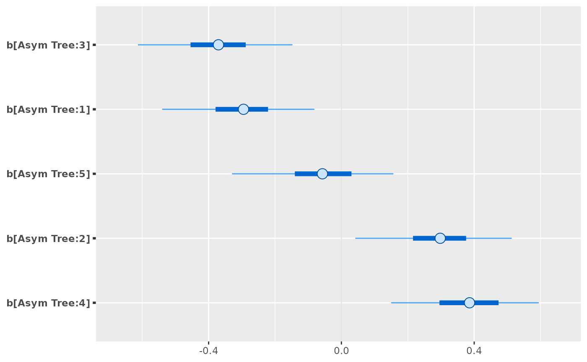

Bayesian nonlinear models with group-specific terms via Stan
stan_nlmer.Rd Bayesian inference for NLMMs with group-specific coefficients that have
unknown covariance matrices with flexible priors.
Bayesian inference for NLMMs with group-specific coefficients that have
unknown covariance matrices with flexible priors.
stan_nlmer(formula, data = NULL, subset, weights, na.action, offset, contrasts = NULL, ..., prior = normal(), prior_aux = exponential(), prior_covariance = decov(), prior_PD = FALSE, algorithm = c("sampling", "meanfield", "fullrank"), adapt_delta = NULL, QR = FALSE, sparse = FALSE)
Arguments
| formula, data | Same as for |
||||||||||
|---|---|---|---|---|---|---|---|---|---|---|---|
| subset, weights, offset | Same as |
||||||||||
| na.action, contrasts | Same as |
||||||||||
| ... | Further arguments passed to the function in the rstan
package ( |
||||||||||
| prior | The prior distribution for the regression coefficients.
See the priors help page for details on the families and
how to specify the arguments for all of the functions in the table above.
To omit a prior ---i.e., to use a flat (improper) uniform prior---
Note: Unless |
||||||||||
| prior_aux | The prior distribution for the "auxiliary" parameter (if
applicable). The "auxiliary" parameter refers to a different parameter
depending on the
|
||||||||||
| prior_covariance | Cannot be |
||||||||||
| prior_PD | A logical scalar (defaulting to |
||||||||||
| algorithm | A string (possibly abbreviated) indicating the
estimation approach to use. Can be |
||||||||||
| adapt_delta | Only relevant if |
||||||||||
| QR | A logical scalar defaulting to |
||||||||||
| sparse | A logical scalar (defaulting to |
Value
A stanreg object is returned
for stan_nlmer.
Details
The stan_nlmer function is similar in syntax to
nlmer but rather than performing (approximate) maximum
marginal likelihood estimation, Bayesian estimation is by default performed
via MCMC. The Bayesian model adds independent priors on the "coefficients"
--- which are really intercepts --- in the same way as
stan_nlmer and priors on the terms of a decomposition of the
covariance matrices of the group-specific parameters. See
priors for more information about the priors.
The supported transformation functions are limited to the named
"self-starting" functions in the stats library:
SSasymp, SSasympOff,
SSasympOrig, SSbiexp,
SSfol, SSfpl,
SSgompertz, SSlogis,
SSmicmen, and SSweibull.
See also
stanreg-methods and
nlmer.
The vignette for stan_glmer, which also discusses
stan_nlmer models. http://mc-stan.org/rstanarm/articles/
Examples
data("Orange", package = "datasets") Orange$circumference <- Orange$circumference / 100 Orange$age <- Orange$age / 100 fit <- stan_nlmer( circumference ~ SSlogis(age, Asym, xmid, scal) ~ Asym|Tree, data = Orange, # for speed only chains = 1, iter = 1000 )#> #> SAMPLING FOR MODEL 'continuous' NOW (CHAIN 1). #> #> Gradient evaluation took 7.9e-05 seconds #> 1000 transitions using 10 leapfrog steps per transition would take 0.79 seconds. #> Adjust your expectations accordingly! #> #> #> Iteration: 1 / 1000 [ 0%] (Warmup) #> Iteration: 100 / 1000 [ 10%] (Warmup) #> Iteration: 200 / 1000 [ 20%] (Warmup) #> Iteration: 300 / 1000 [ 30%] (Warmup) #> Iteration: 400 / 1000 [ 40%] (Warmup) #> Iteration: 500 / 1000 [ 50%] (Warmup) #> Iteration: 501 / 1000 [ 50%] (Sampling) #> Iteration: 600 / 1000 [ 60%] (Sampling) #> Iteration: 700 / 1000 [ 70%] (Sampling) #> Iteration: 800 / 1000 [ 80%] (Sampling) #> Iteration: 900 / 1000 [ 90%] (Sampling) #> Iteration: 1000 / 1000 [100%] (Sampling) #> #> Elapsed Time: 0.746126 seconds (Warm-up) #> 0.57953 seconds (Sampling) #> 1.32566 seconds (Total) #>print(fit)#> stan_nlmer #> family: gaussian [inv_SSlogis] #> formula: circumference ~ SSlogis(age, Asym, xmid, scal) ~ Asym | Tree #> observations: 35 #> ------ #> Median MAD_SD #> Asym 1.8 0.1 #> xmid 6.8 0.3 #> scal 3.2 0.3 #> sigma 0.1 0.0 #> #> Error terms: #> Groups Name Std.Dev. #> Tree Asym 0.314 #> Residual 0.092 #> Num. levels: Tree 5 #> #> Sample avg. posterior predictive distribution of y: #> Median MAD_SD #> mean_PPD 1.2 0.0 #> #> ------ #> For info on the priors used see help('prior_summary.stanreg').posterior_interval(fit)#> 5% 95% #> Asym 1.61205614 2.07358469 #> xmid 6.28806406 7.40166352 #> scal 2.78464705 3.68126717 #> b[Asym Tree:3] -0.56145976 -0.13335532 #> b[Asym Tree:1] -0.50464954 -0.04277593 #> b[Asym Tree:5] -0.26502240 0.17252576 #> b[Asym Tree:2] 0.09539073 0.54301827 #> b[Asym Tree:4] 0.16672400 0.61385364 #> sigma 0.07125760 0.11664218 #> Sigma[Tree:Asym,Asym] 0.03904437 0.20535351plot(fit, regex_pars = "b\\[")